Tutorials
- Newt 4 Updates video:
- Introduction Newt basics video:
- Menubar and toolbar
- Right panel Newt advanced video:
- File operations
- Convenient editing via SBGN bricks
- Alignment, grid, and guidelines
- Semantic validation
- Complexity management Complexity management video:
- Search and highlight
- Automatic layout Automatic layout video:
- Querying Pathway Databases
- References
Introduction
Newt editor is composed of a menu bar and a toolbar laid out horizontally on top of the drawing canvas with pan-zoom controls in its upper left, and a right panel for object inspection, map configuration and the palette.
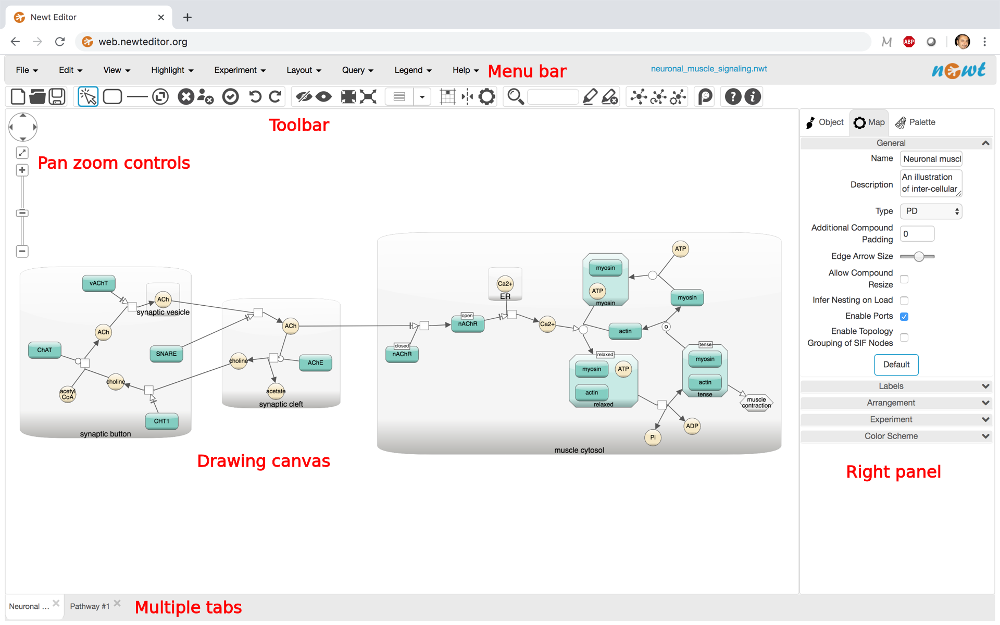{kind=link}
Newt is a viewer and editor of maps drawn in Systems Biology Graphical Notation (SBGN) Process Description (PD) and Activity Flow (AF) languages, Systems Biology Markup Language (SBML) or Simple Interaction Format (SIF). A quick introduction to SBGN can be found here. Please refer to reference cards, learner's cards and specifications for details of SBGN languages.
Newt can be launched with a blank model, where a map can be created from scratch or an existing one can be uploaded for editing. Some samples are also available under the File menu. Samples include SBGN PD and AF learner's cards as well. In addition, one can launch Newt with a remote SBGN, SBML, GPML, or model specified as a URL or as a Pathway Commons URI (example).
Here is a short tutorial illustrating basics of Newt. Also refer to "Help | {Quick Help,Quick Tutorial,UI Guide}" for further help.
A video illustrating version 4 features can be found here.
Menubar and toolbar
Menubar located at the top of the Newt editor is where all capabilities of the tool are assembled in an organized manner. Right below is a toolbar, which compiles more frequently used of all available operations for convenience.
Right panel
The panel on the right is composed of the following tabs.
Object properties inspector and editor
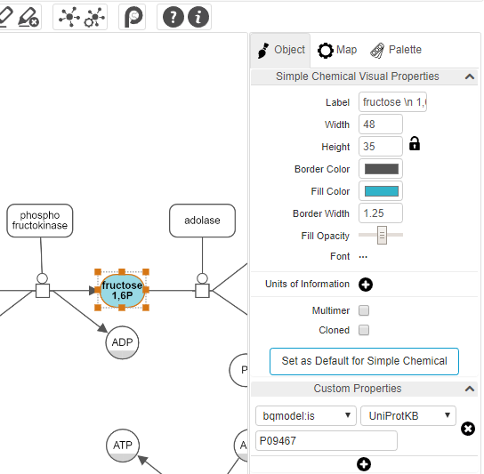{kind=link}
The object inspector on the right panel titled "Object" is activated when a particular object is selected by left-clicking on it, enabling inspection as well as editing of the style of the underlying object from border color to font type and size to state variables and custom annotations.
☘ When multiple objects are selected, the inspector will only display the common attributes (and their values if all objects have the same value for that attribute) and will allow convenient simultaneous modification of those attributes.
A convenient way to change the style of an entire map is to use one of pre-defined color schemes (see section on Color Scheme) under the Map tab in the right panel. 3D or gradient coloring of map objects are available through these colors schemes via background images as well as solid fill colors.
Depending on the type of the object being inspected, a section for additional properties of the object from external web resouces may be presented as follows:
- When the object is a macromolecule or a similar entity, a section named "Properties from GeneCards" will appear. If the user clicks on the button titled with the symbol of the entity available under this section, the corresponding page in GeneCards, if any, will be opened in a separate tab.
- When the object is a simple chemical, a section named "Properties from ChEBI" will appear. If the user unfolds this section, properties of the associated simple chemical from CheBI, if any, will be shown in-place in the inspector tab.
A section titled "Custom Properties" in the Object tab is dedicated to annotations of map objects. Here the user can add an annotation of a selected object using a BioModels qualifier or a custom key-value pair.
Map properties
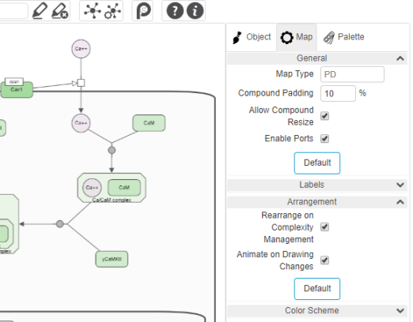{kind=link}
The tab titled "Map" on the right panel is for configuring the drawing of the map. It can be enabled with "File | Map Properties..." or through the associated tool on the toolbar.
Numerous settings of a map from general properties like compound paddings to label related settings such as whether to fit labels to nodes, to color scheme can be set using this tab.
Name and description of the map can also be set using this panel.
☘ Notice that some of these settings apply to all map types, whereas others only apply to a specific map type.
Type of a map can be one of the following:
- PD: A process description map containing nodes/edges only from PD palette. A semantic validation check (Edit | Validate Map...) can be performed only when the map type is PD.
- AF: An activity flow map containing nodes/edges only from AF palette
- PD+AF: An SBGN map containing nodes/edges from PD or AF palette 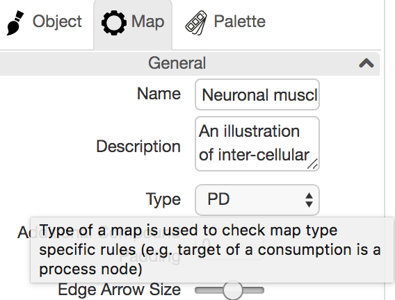
- SIF: A SIF map containing nodes/edges only from SIF palette
- SBML: An SBML map containing nodes/edges from SBML palette
- PD+AF+SIF+SBML: A hybrid map containing nodes/edges from any palette
{kind=link}
☘ When you are over a particular setting in this tab, a tooltip will show an explanation of the associated setting.
Experiment data
One particular part of this tab that might be interest to most users is for uploading and showing experiment data in the context of your pathways.
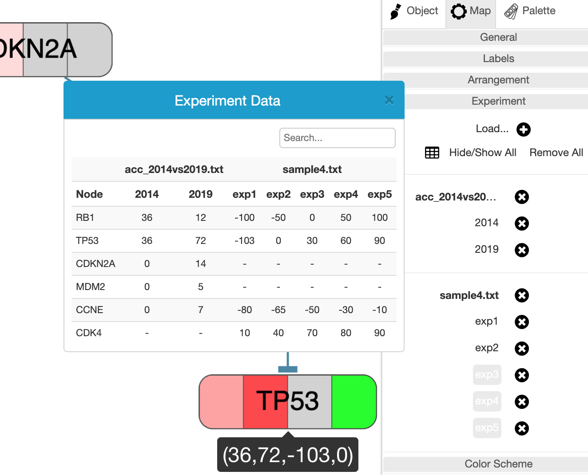{kind=link}
Experiment data files are simple tab-delimited files with possibly multiple studies. Once loaded using "Experiment | Load..." menu or the + icon in the Experiment section of the Map tab, the background of each associated node whose label matches those given in the file will be colored according to the data value. Each file might contain one or more studies, and multiple files may be uploaded for analysis. The node background is split into as many times as studies available in all currently loaded and unhidden study.
Users may inspect the uploaded experiment in a number of ways. First, it's color coded in the associated section of the node background. Secondly, when the mouse is over a particular node with some experiment data, a tooltip is displayed to show the corresponding values. Finally, a popup table is available through the table icon in the Experiment section of the Map tab.
☘ The values table is searchable by node label and could be sorted by node label or by values of a particular experiment by clicking on the associated column header. Another nice feature for locating the associated map object is by hovering a particular row, which will highlight the corresponding object in the map.
Each file or study may be temporarilly hidden or unhidden by simply clicking on the file or study name, respectively.
Below is a sample tab-delimited experiment data file for this SIF map:
version\t1.0
name\tsample experiment data
description\tAdenoid Cystic Carcinoma 2014 vs 2019
color\t0\t#FFFFFF\t100\t#FF0000
gene\t2014\t2019
RB1\t36\t12
TP53\t36\t72
CDKN2A\t0\t14
MDM2\t0\t5
CCNE\t0\t7
where:
- The first optional line specifies the version of the file.
- The second optional line specifies the name of the experiment.
- The third optional line provides a description of the experiment. 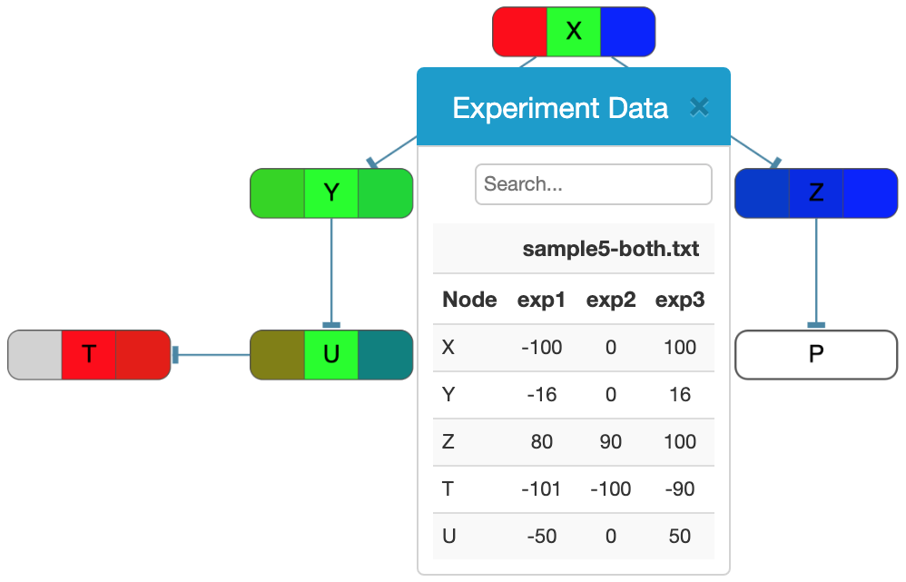
- The fourth optional line provides a color mapping for values in the experiment. Here the goal is to map certain control points / values to colors. When these values are sorted in ascending order, anything outside the range is considered invalid and displayed as gray. Values that map to these exact control values are displayed in the color specified. And the values that fall in-between these control points are linearly mapped to the in-between color. For instance, for the color description provided below, values are restricted to be in range [-100, 100] with control points and corresponding colors being {-100, 0, 100} and {red, green, blue}, respectively, yielding a coloring as shown in the figure on the right:
☘ By default colors are expected to be in range [-100, 100] with colors blue and red, respectively at end points, and white at 0 (i.e. blue to white to red uniformly).
color -100 #FF0000 0 #00FF00 100 #0000FF
- The fifth mandatory line specifies the names of the studies in the experiment.
- The lines after the names of the studies will list the data values for each node with the given label in each study (one per column) in the experiment.
{kind=link}
Color scheme
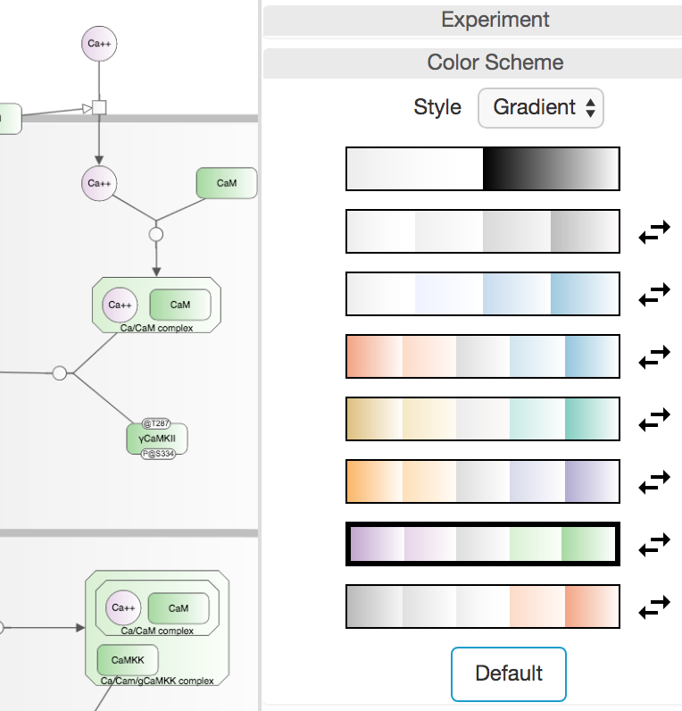{kind=link}
Newt provides a number of pre-defined color schemes with varying styles: solid, gradient or 3D available under the Color Scheme section in the Map tab. The chosen color scheme is not only applied to all nodes/edges in the map but also to any new nodes and edges created interactively through the Palette. The icon to the right of each color scheme is for reversing the colors on that particular scheme.
☘ Notice however that when experiment data overlay feature is in use, this section is disabled and the color scheme defaults to solid black and white as the background of nodes are used for showing color coded experiment values.
Palette
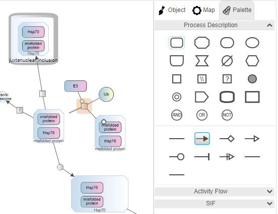{kind=link}
When the Palette tab on the right panel is chosen or when the user clicks in an empty area on the drawing canvas, the palette composed of nodes and edges of available map types is displayed. The type of a map (see Type under General Properties) is considered PD by default when the user constructs a map from scratch, using only nodes and edges from the PD palette. The user, however, may change this on an empty map and use the corresponding palette. If the user wants to mix up nodes and/or edges from multiple palettes though, they should set the map type to be a PD+AF (any SBGN node/edge) or PD+AF+SIF+SBML (any node/edge). The notation specific checks (e.g. a modulation arc can only go from a source EPN such as macromolecule to a process node in a PD map) are no longer performed for hybrid maps though.
Nodes can either be created by dragging from the palette onto the canvas or by selecting a particular node on the palette and then clicking on the canvas. Clicking on a node or an edge puts you in node/edge creation mode, and upon creation of the node/edge, Newt returns to selection mode. Clicking twice on a tool, on the other hand, puts you in sustained mode so that the user can create multiple objects of that type in a row.
A convenient way to reconnect an edge is by selecting the edge and grabbing it from its reconnection handles at both ends and dragging onto its new source / target.
File operations
Newt can read and write an extended version of SBGNML files with ".nwt" extension. Extension includes style of map objects (such as color, font, and optional background image), custom properties (e.g. Uniprot ID associated with a macromolecule), and hidden/collapsed map content; thus, such information is restored upon save-reload.
Import-export
If you'd like a version without such style and annotation information to perhaps exchange maps with other tools such as SBGN-ED, however, you could get your map in plain SBGNML using "Export | SBGN-ML Plain".
☘ Newt can support both milestones 0.2 and 0.3 but opts to 0.2 by default. Persistency in milestone 0.3 is available though through the "Export" menu.
Newt also supports import and export facilities from and to SBML, CellDesigner, and GPML through "{Import, Export} | {SBML, CellDesigner, GPML}".
In addition, AF models can be imported to Newt from simple tab-delimited files. An example model formatted in this manner follows:
SBGNViz AF 1.0
Sample Pathway title
This is a sample pathway description.
--NODE_NAME\tNODE_ID\tNODE_TYPE\tPARENT_ID\tPOSX\tPOSY\tWIDTH\tHEIGHT--
ERBB2\t1\tBIOLOGICAL_ACTIVITY\t-1
NRAS\t2\tBIOLOGICAL_ACTIVITY\t-1
...
--EDGE_ID\tSOURCE\tTARGET\tEDGE_TYPE--
11\t1\t2\tNEGATIVE_INFLUENCE
...
Furthermore, maps may be imported from or exported to Simple Interaction Format (SIF) files using the "{Import,Export} | SIF" File menu items. A SIF file is formatted as follows:
entity_id\trelationship_type\tentity_id
...
where entity_id is the label and ID of a macromolecule or a simple chemical and relationship_type is one of the predetermined types of relationships between these two entities.
Here is a sample SIF file along with sample style and layout files, respectively (SIF, style and layout).
Below is a table showing how each import or export operation behaves. Note that the current map type matters in most such operations. 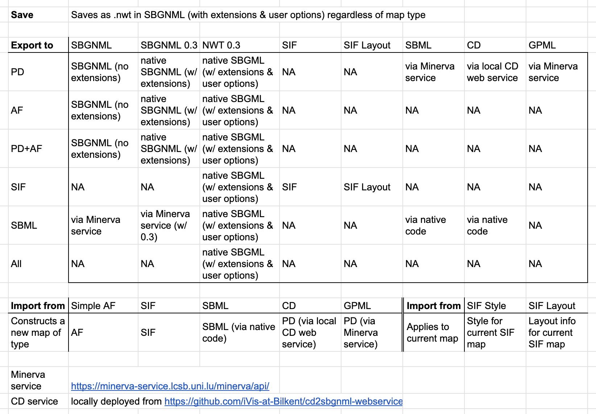
{kind=link}
Static images
File menu can be used to export the current map as a static image (either as a raster file in PNG or JPG or as scalable vector graphics in SVG).
Persisting user preferences
Users might like to save their preferences (including Map, Layout, Grid, and Object properties) for later use using "File | Save Preferences..." in a file with ".newtp" extension. These preferences can later be loaded using "File | Load Preferences..." to be applied to any map.
Launch with a remote SBGN map
As noted above Newt may be launched by a remote file via a URL (example) or by URI (example) as a query to the Pathway Commons database. In the event that the provided URL is a file containing
a non-native Newt format (e.g., GPML), Newt will automatically apply a conversion and display the provided model as an SBGN map. The user
might like to change some map properities on a remote launch. In case a map property is also specified
inside the file, they will be overwritten by these parameters passed during remote launch. In the case of
compoundPadding and inferNestingOnLoad, however, any values specified inside the file will be ignored.
Available properties (with default values listed first) include:
compoundPadding=0,inferNestingOnLoad=false,arrowScale=1.25,showComplexName=true,dynamicLabelSize=regular,fitLabelsToNodes=false,fitLabelsToInfoboxes=false,recalculateLayoutOnComplexityManagement=true,rearrangeOnComplexityManagement=true,animateOnDrawingChanges=true,adjustNodeLabelFontSizeAutomatically=false,enablePorts=true,allowCompoundNodeResize=false,mapColorScheme={black_white, black_white, greyscale, inverse_greyscale, blue_scale, inverse_blue_scale, opposed_red_blue, opposed_red_blue2, opposed_green_brown, opposed_green_brown2, opposed_purple_brown, opposed_purple_brown2, opposed_purple_green, opposed_purple_green2, opposed_grey_red, opposed_grey_red2, pure_white},mapName="",mapDescription="",enableSIFTopologyGrouping=false,applyLayoutOnURL=false.Convenient editing via SBGN bricks
Map content can be expanded using the Palette as described earlier. A convenient way to populate a map is using the templates under the Edit (Add Using SBGN Bricks..) menu inspired by SBGN bricks.
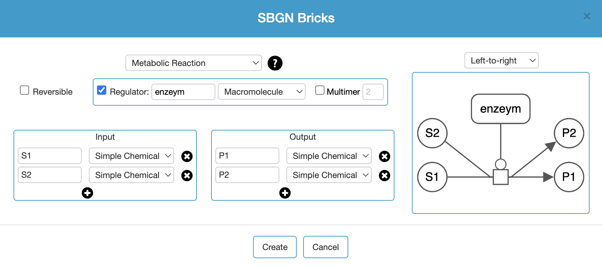 Alignment, grid and guidelines
Newt provides various mechanisms for alignment of map objects. One such facility is available through the View menu, where the user can select a number of objects and align their center or edge horizontally or vertically. Such alignment is performed with respect to the object selected first.
Another way to perform alignment is through the grid. When you enable the grid tool () on the toolbar, a grid is displayed and nodes are snapped to grid as they are dragged.
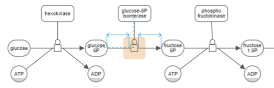Yet another way to perform alignment is by enabling the guidelines with the associated tool on the toolbar (). Two types of guidelines are enabled with this tool:
- Geometric guidelines (e.g. center of two nodes are in alignment) and
- Distance guidelines (e.g. a process node is distanced equally from its source and target).
Semantic validation
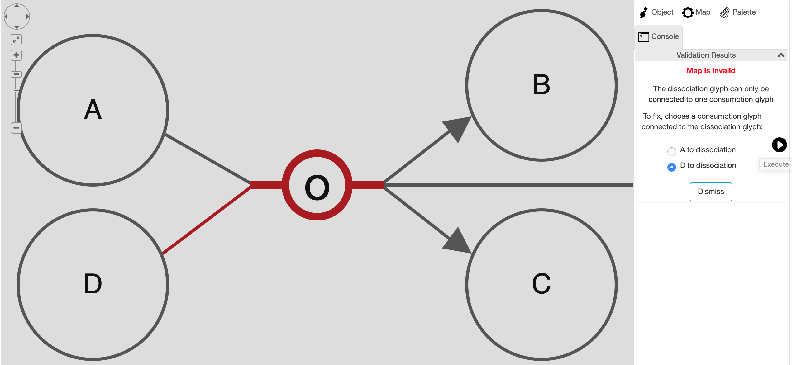SBGN PD maps may be validated using "Edit | Validate Map..." menu item. This will validate the map and show the user any semantic problems with the map in a newly created tab titled "Console" in the right panel. Whenever possible, Newt will suggest a fix for each particular problem, allowing the user to choose from potentially multiple ways to fix the problem in this new tab.
Complexity management
Some maps can be rather large. No matter how advanced of layout and viewing facilities are available, navigation through such maps and tracing interactions can be cumbersome. Newt provides some advanced complexity management techniques [2,1,3] so that the user can focus on a sub-map of interest at any time during their analysis, removing unwanted details temporarily from the map. Below we discuss these facilities.
Here is a short tutorial illustrating complexity management in Newt.
Hide-show
Unwanted details of a map may be hidden by the user temporarily through the View menu. Below is an example, where the user initially keeps a single process and hides all others (top). Then the user gradually reveals the hidden neighbors (bottom maps) using "Show Hidden Neighbors" in the node context menu.
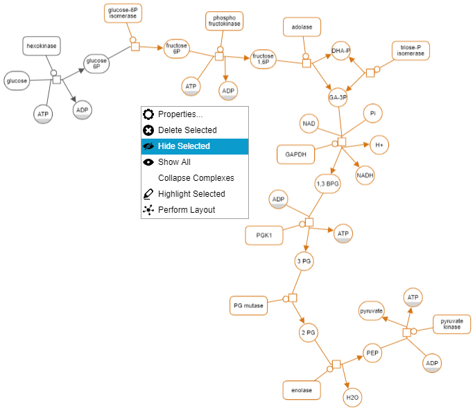 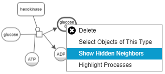 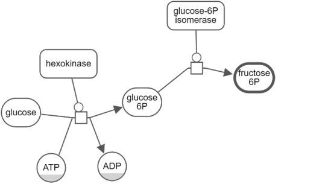 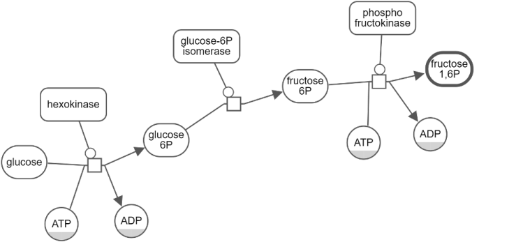 ... Expand-collapse
Another way to manage complexity is by collapsing currently not-so-interesting parts of a map (i.e. a submap, a compartment or a complex). Collapsed compound node can later be expanded to reveal its nested content.
Below is an example, where, first, all complexes of a map have been collapsed to reduce complexity. Then, nucleus was collapsed to focus on the rest of the map.
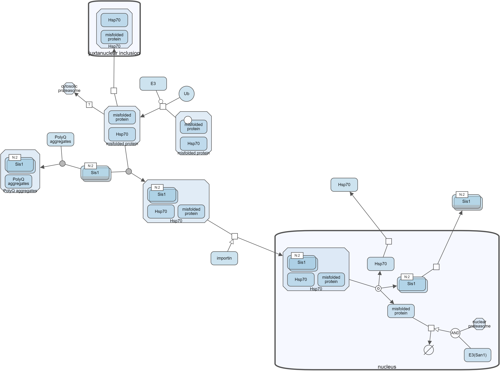 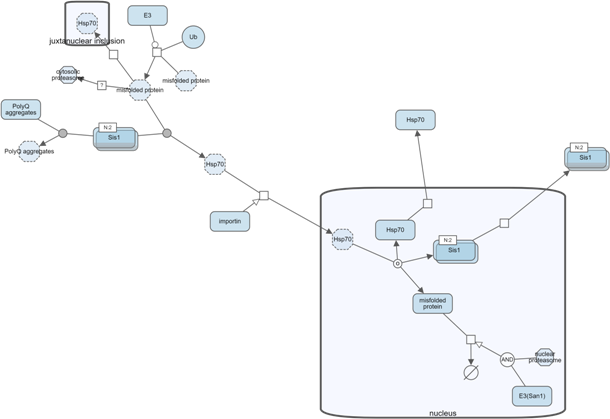 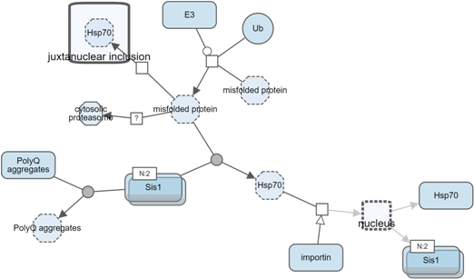 Search and highlight
Newt allows users to highlight a specified part of a map through the Highlight menu (e.g. Highlight | Selected). To highlight the part of a map involving a certain object, you may use the Search facility (Highlight | Search). Newt looks for node labels with specified keyword and highlights them (all processes involved in case of map type being PD).
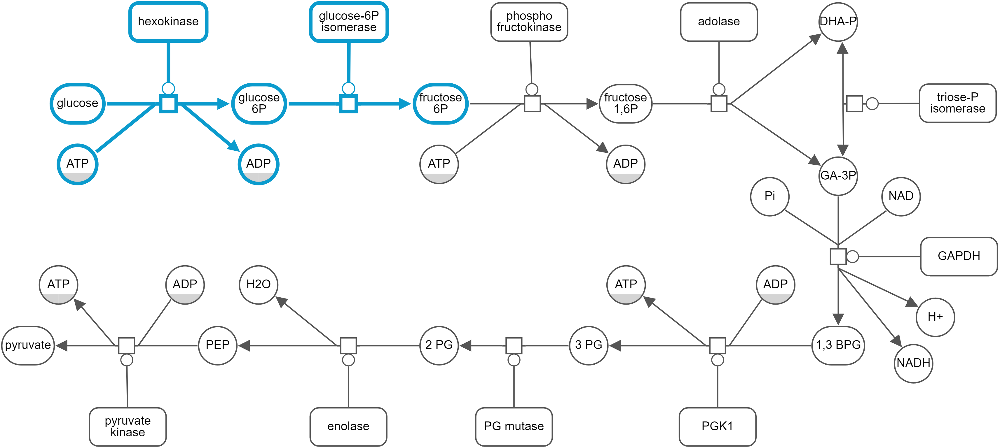Automatic layout
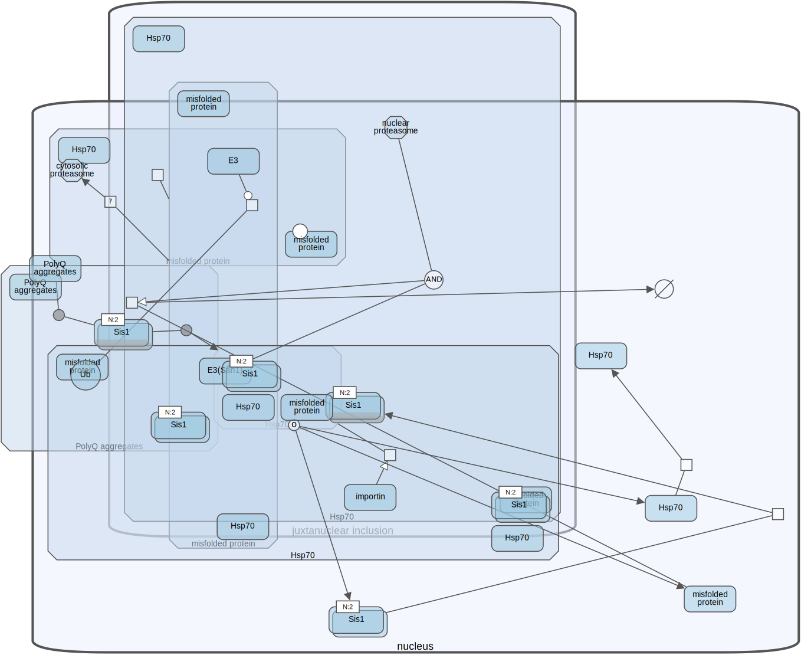 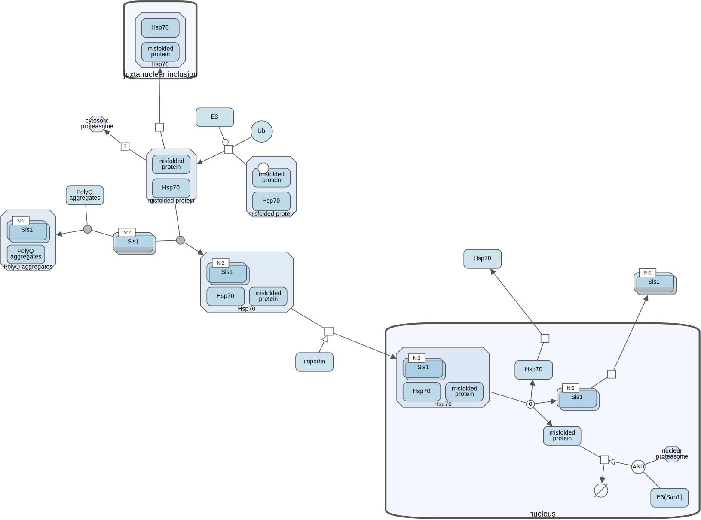Newt provides automatic layout services to lay out a map from scratch (disable Incremental flag under Layout | Layout Properties...) or incrementally (default). Newt uses a layout algorithm [5,4,6] respecting compound structures (e.g. compartments). Please refer to the related extension for options for configuring automatic layout.
The same algorithm is also applied incrementally after complexity management operations described earlier, if the associated flag (Map Properties... | Arrangement | Rearrange on Complexity Management) is enabled.
Here is a short tutorial illustrating automatic layout capabilities of Newt.
Querying Pathway Databases
Newt provides an extensive interface to perform live queries to the Pathway Commons database, presenting results in SBGN, and enabling editing on them. Currently available type of queries include:
- Query Paths Between (find all paths of specified length limit between any two entities of the specified set),
- Query From To.. (find all paths of specified length limit from a set of source entities to a set of target entities),
- Common Stream (find molecules within the specified distance that are affecting or affected by a specific set of molecules in common),
- Neighborhood (find the neighbors of an entity within a certain distance), and
- Query by URI
For instance, Paths Between query takes a list of gene symbols (separated by blank spaces or on separate lines) and a length limit specifying the maximum length of paths between specified genes. Since there could be exponentially many paths between multiple genes, this length limit can be at most 3.
Additional options are used to enable removal of disconnected entities and redundant processes as there might be duplicate instances of the same process due to Pathway Commons gathering pathways from multiple different databases.
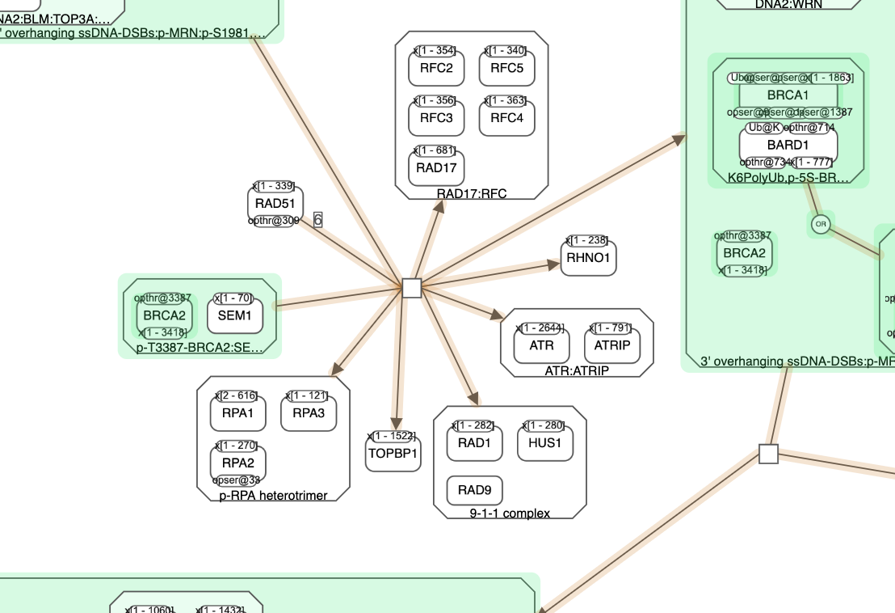Query results are highlighted, where source and/or target genes are colored in green in this example and the connecting paths are in orange.
Newt also provides querying Reactome by Reactome ID, and querying WikiPathways by WPID.
References
[1] H. Balci, M.C. Siper, N. Saleh, I. Safarli, L. Roy, M. Kilicarslan, R. Ozaydin, A. Mazein, C. Auffray, O. Babur, E. Demir and U. Dogrusoz, Newt: a comprehensive web-based tool for viewing,constructing, and analyzing biological maps, Bioinformatics, 37(10), pp. 1475–1477, 2021.
[2] M. Sari, I. Bahceci, U. Dogrusoz, S.O. Sumer, B.A. Aksoy, O. Babur, E. Demir, "SBGNViz: a tool for visualization and complexity management of SBGN process description maps", PLoS ONE, 2015.
[3] U. Dogrusoz and B. Genc, "A Multi-Graph Approach to Complexity Management in Interactive Graph Visualization", Computers & Graphics, 2006.
[4] U. Dogrusoz, A. Karacelik, I. Safarli, H. Balci, L. Dervishi, M.C. Siper, "Efficient methods and readily customizable libraries for managing complexity of large networks", PLoS ONE, 2018.
[5] B. Genc, U. Dogrusoz, "An Algorithm for Automated Layout of Process Description Maps Drawn in SBGN", Bioinformatics, 32(1), pp. 77-84, 2016.
[6] U. Dogrusoz, E. Giral, A. Cetintas, A. Civril, and E. Demir, "A Layout Algorithm For Undirected Compound Graphs", Information Sciences, 2009.
[7] U. Dogrusoz, E. Giral, A. Cetintas, A. Civril, and E. Demir, "A Compound Graph Layout Algorithm for Biological Pathways", LNCS, vol. 3383, pp. 442-447, 2004.
[8] U. Dogrusoz, A. Cetintas, E. Demir, and O. Babur, "Algorithms for Effective Querying of Compound Graph-Based Pathway Databases", BMC Bioinformatics, 10:376, 2009.
{kind=link}
{kind=link}
{kind=link}
{kind=link}
{kind=link}
{kind=link}
{kind=link}
{kind=link}
{kind=link}
{kind=link}
{kind=link}
{kind=link}
{kind=link}
{kind=link}
{kind=link}